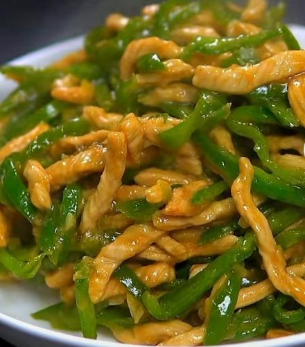
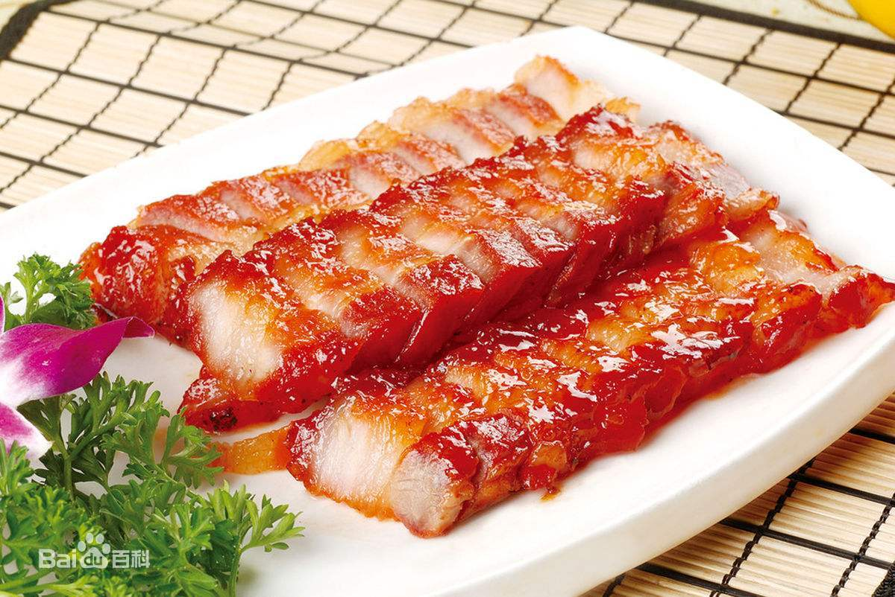
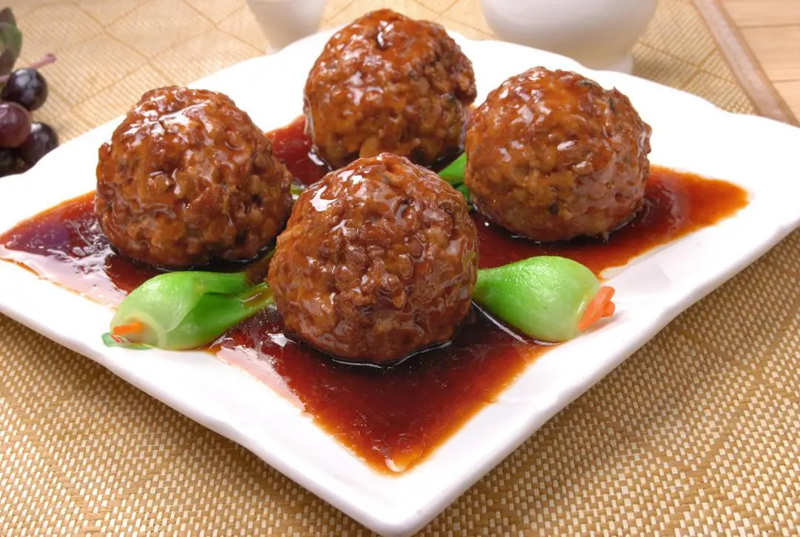
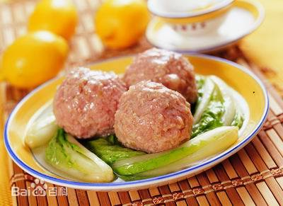

川菜
四川菜系，简称川菜。川菜风味包括成都、乐山、重庆、达州、内江、自贡等地方菜的特色，主要特点在于味型多样。川菜的复合味型有20多种，如咸鲜味型、家常味型、麻辣味型、糊辣味型、鱼香味型、姜汁味型、怪味味型、椒麻味型、酸辣味型、红油味型、蒜泥味型、麻酱味型、酱香味型、烟香味型、荔枝味型、五香味型、香糟味型、糖醋味型、甜香味型、陈皮味型、芥末味型、咸甜味型、椒盐味型、糊辣荔枝味型、茄汁味型等等。香辣肉丝
【特色】：它以麻辣、鱼香、家常、怪味、酸辣、椒麻、醋椒为主要特点。
【代表菜品】：回锅肉、水煮鱼、口水鸡、钵钵鸡、毛血旺、宜宾燃面、灯影牛肉、重庆火锅、辣子鸡、甜皮鸭、奶汤面、椒麻鸡、冷吃兔、鸡豆花、翘脚牛肉、干烧岩鲤、干烧桂鱼、鱼香肉丝、廖排骨、怪味鸡、宫保鸡丁、粉蒸牛肉、麻婆豆腐、毛肚火锅、干煸四季豆、担担面、开水白菜、鱼香肉丝、鱼香茄子、夫妻肺片、东坡肘子、粉蒸排骨、麻辣鸡块、伤心凉粉、青椒肉丝、川味香肠、红糖糍粑、顺江薄饼、尖椒肥肠、酸菜鱼、烧白、干锅/冒菜/串串香/火锅/泡菜/老腊肉等。粤菜
广东菜系，简称粤菜。是中国传统四大菜系、八大菜系之一，发源于岭南。粤菜由广州菜（也称广府菜）、潮州菜（也称潮汕菜）、东江菜（也称客家菜）三种地方风味组成，三种风味各具特色。广州菜范围包括珠江三角洲和韶关、湛江等地，用料丰富，选料精细，技艺精良，清而不淡，鲜而不俗，嫩而不生，油而不腻。擅长小炒，要求掌握火候和油温恰到好处。还兼容许多西菜做法，讲究菜的气势、档次。潮州菜发源于潮汕地区，汇闽、粤两家之长，自成一派。以烹制海鲜见长，汤类、素菜、甜菜最具特色。刀工精细，口味清纯。东江菜起源于广东东江一带，菜品多用肉类，极少水产，主料突出，讲究香浓，下油重，味偏咸，以砂锅菜见长，有独特的乡土风味。蜜汁叉烧
【特色】：它以选料广泛，选料精细，讲究鲜、嫩、爽、滑、浓为主要特点。
【代表菜品】：烤乳猪、清蒸东星斑、烧鹅、白切鸡、红烧乳鸽、蜜汁叉烧、脆皮烧肉、上汤焗龙虾、鲍汁扣辽参、菜胆炖鱼翅、白灼象拔蚌、椰汁冰糖燕窝、麒麟鲈鱼、椒盐濑尿虾、蒜香骨、白灼虾、干炒牛河、广东早茶、老火靓汤、罗汉斋、广式烧填鸭、豉汁蒸排骨、菠萝咕噜肉、玫瑰豉油鸡、萝卜牛腩煲、潮州牛肉丸、潮汕鱼丸、生菜龙虾、鸳鸯膏蟹、潮州打冷、卤鹅肝、蚝烙、芙蓉虾、沙茶牛肉、客家酿豆腐、梅菜扣肉、盐焗鸡、猪肚包鸡、盆菜。鲁菜
鲁菜，是中国传统四大菜系（也是八大菜系）中的自发型菜系（相对于淮扬、川、粤等影响型菜系而言），是历史最悠久、技法最丰富、最见功力 的菜系。 是黄河流域烹饪文化的代表。2500年前山东的儒家学派奠定了中国饮食注重精细、中和、健康的审美取向；北魏末年《齐民要术》（成书时间为约公元533—544年）总结的黄河中下游地区的“蒸、煮、烤、酿、煎、炒、熬、烹、炸、腊、盐、豉、醋、酱、酒、蜜、椒”奠定了中式烹调技法的框架；明清时期大量山东厨师和菜品进入宫廷，使鲁菜雍容华贵、中正大气、平和养生的风格特点进一步得到升华。四喜丸子
经典菜品有一品豆腐、糖醋鲤鱼、葱烧海参、三丝鱼翅、白扒四宝、糖醋黄河鲤鱼、九转大肠、油爆双脆、扒原壳鲍鱼、油焖大虾、醋椒鱼、糟熘鱼片、温炝鳜鱼片、芫爆鱿鱼卷、清汤银耳、木樨肉（木须肉）、胶东四大拌、糖醋里脊、红烧大虾、招远蒸丸、枣庄辣子鸡、清蒸加吉鱼、济南把子肉、葱椒鱼片、糖酱鸡块、油泼豆莛、诗礼银杏、奶汤蒲菜、乌鱼蛋汤、锅烧鸭、香酥鸡、黄鱼豆腐羹、拔丝山药、蜜汁梨球、砂锅散丹、布袋鸡、芙蓉鸡片、氽芙蓉黄管、阳关三叠、雨前虾仁、乌云托月、黄焖鸡、锅塌黄鱼、奶汤鲫鱼、烧二冬、泰山三美汤、汆西施舌 、赛螃蟹、烩两鸡丝、象眼鸽蛋、云片猴头、油爆鱼芹、油炸全蝎、西瓜鸡等。淮扬菜
淮扬菜是中国传统四大菜系之一，发源于扬州、淮安。菜系充满淮、扬特点。原料多以水产为主，淮扬菜系大多以江湖河鲜为主料，以顶尖烹艺为支撑，以本味本色为上乘，以妙契众口为追求，雅俗共赏而不失其大雅，尤其是“和、精、清、新”的独特理念。扬州狮子头
淮扬菜中，“扬”即扬菜，以扬州一带为代表的长江流域，“淮”即淮菜，以淮安一带为代表的淮河流域。
扬州、淮安是国家历史文化名城。淮扬菜系指以扬州府和淮安府为中心的淮扬地域性菜系，形成于扬州、淮安等地区。淮扬菜始于春秋，兴于隋唐，盛于明清，素有“东南第一佳味，天下之至美”之美誉。淮扬菜选料严谨、因材施艺；制作精细、风格雅丽；追求本味、清鲜平和。
淮扬菜十分讲究刀工，刀功比较精细，尤以瓜雕享誉四方。菜品形态精致，滋味醇和；在烹饪上则善用火候，讲究火功，擅长炖、焖、煨、焐、蒸、烧、炒；原料多以水产为主，注重鲜活，口味平和，清鲜而略带甜味。著名菜肴有清炖蟹粉狮子头、大煮干丝、三套鸭、软兜长鱼、水晶肴肉、松鼠鳜鱼、梁溪脆鳝等。其菜品细致精美，格调高雅。
系因地理、气候、习俗、特产的不同形成了不同的地方风味，菜系的划分单就汉族的饮食特点而言，目前有四大菜系、八大菜系、十大菜系之说，而且划分系类仍有继续增加的趋势。如果按四大菜系分：有川菜、粤菜、苏菜和鲁菜。也有分八大菜系的。其中各大菜系交相辉映，各有千秋，成为了中华民族珍贵的文化瑰宝。